1과목: 유통경영
1. 카플란(Kaplan)과 노튼(Norton)이 제시한 균형성과표(BSC : Balanced ScoreCard)의 4가지 관점으로 옳지 않은 것은?
2. 유통산업발전법에서 규정된 조항들의 내용으로 옳지 않은 것은?
3. 다음 사례에 해당하는 복지후생 방안은?
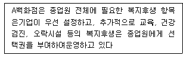
4. 재고조사방법 중 계속기록법에 대한 설명으로 가장 옳지 않은 것은?
5. 임금체계에 대한 설명으로 옳지 않은 것은?
6. 소매점포내 종업원간 발생할 수 있는 갈등을 해결하는 방법에 대한 설명으로 옳지 않은 것은?
7. ( )안에 들어갈 성과평가 평정오류를 올바르게 나열한 것은?
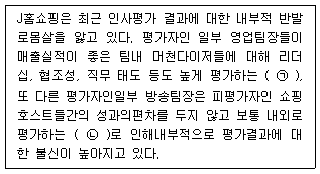
8. 학습이론의 하나인 작동적 조건화(operant conditioning)와 관련이 없는 것은?
9. 다음은 각 의사결정모형에 대한 설명이다. 올바르게 설명한 것은 모두 몇 개인가?
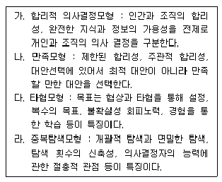
10. 조직내 구성원간의 커뮤니케이션 네트워크는 사슬형(chain type), 원형(circle type), Y형(Y- type), 수레바퀴형(wheel of star type),완전연결형(all channeltype) 등이 있다. 이중 수레바퀴형 네트워크에 대한설명으로 옳은 것은?
11. ( )안에 들어갈 용어를 올바르게 나열한 것은?
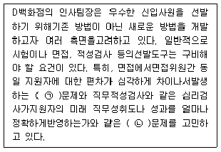
12. 다양한 종업원 보상프로그램 중 부가 급부(fringe benefit) 에 해당되지 않는 것은?
13. 재무비율 중에서 기업의 안정성과 지급능력을 나타내는 비율 중의 하나로 볼 수 있는 것은?
14. 태도(attitude)를 다차원적 개념으로 접근할 경우, 3가지구성요소를 올바르게 나열한 것은?
15. 노사협의제와 단체교섭을 비교하여 설명한 내용으로 옳지 않은 것은?
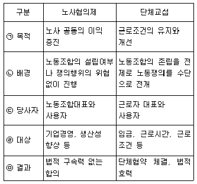
16. 한 번 학습된 것은 다른 쪽으로도 전이되어 그곳의 학습을 돕는다는 것을 학습의 전이라고 한다. 학습의전이 유형에 해당하지 않는 것은?
17. 다음의 사례 내용과 가장 관련성이 높은 동기부여이론은?
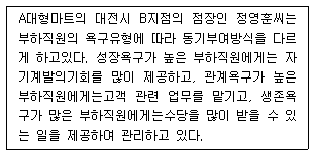
18. 유통기업의 경영자에게 요구되는 변혁적 리더십(transformational leadership)에 대한 내용으로 옳지 않은 것은?
19. 학습조직이론에 관한 내용으로 옳은 것을 모두 고르면?
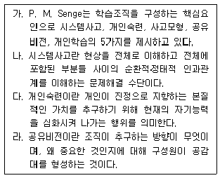
20. 다음 내용은 무엇에 대한 설명인가?
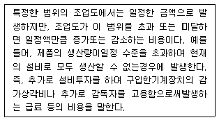
2과목: 물류경영
21. 재고의 공간적 배치와 관련된 기능으로, 물류거점별로소비자의 요구에 부응하는 형태별 분류와 배송을 가능하게 해 주는 재고관리의 기능은?
22. 다음은 컨테이너(Container) 종류 중 무엇에 대한특징을 설명한 것인가?
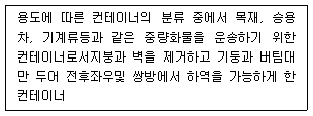
23. 운송(transportation)에서 수요지, 공급지, 수요량, 공급량 등이 다음과 같을 때 최소비용법을 이용하여 산출한 총 운송비용은?
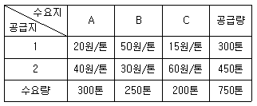
24. 하역에 관련된 내용으로 옳지 않은 것은?
25. 파렛트에 대한 내용으로 옳지 않은 것은?
26. ( )에 알맞은 SCM 기법은?
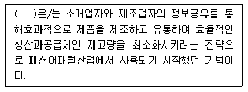
27. 물류관련 용어에 대한 내용으로 옳은 것을 모두 고르면?
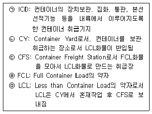
28. 재고에 관련된 내용으로 옳지 않은 것은?
29. 물류공동화의 효과로 옳지 않은 것은?
30. 물류정책기본법에서 규정하는 ‘물류사업’의 정의부분이다. ( )안에 들어갈 용어로 옳지 않은 것은?
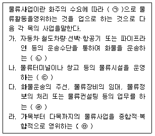
31. 물류센터 운영 효과에 대한 내용으로 옳지 않은 것은?
32. 3PL(Third Party Logistics) 에 대한 내용으로 옳지 않은것은?
33. 해상운송이 포함되지 않는 운송형태를 모두 고르면?
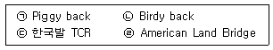
34. VMI에 대한 설명으로 옳은 것은?
35. 보관과 관련한 각종 원칙에 대한 설명으로 옳지 않은 것은?
36. 물류의 목표를 달성하기 위한 고객서비스를 구현하기위해 고려해야 하는 물류의 7R원칙으로만 바르게 짝지어진 것은?
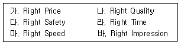
37. 기업물류비 산정지침에 따른 물류비 분류체계를 기준으로 했을 때 옳은 것은?
38. 물류시스템을 구성하는 각종 요소의 규격과 치수에 관한기준을 표준화하는 물류모듈(Physical Distribution Module)화에 관한 설명으로 가장 옳지 않은 것은?
39. 재고결정과 관련된 내용으로 옳은 것은?
40. 물류합리화의 대상 중 하나인 포장의 개선에 관한 설명으로 가장 옳지 않은 것은?
3과목: 상권분석
41. 상권분석 기법의 하나로 점포선택행동을 확률적 현상으로 보는 Huff모델과 관련한 설명으로 옳지 않은 것은?
42. 소매포화지수(IRS)와 시장성장잠재력지수(MEP)에 대한설명으로 옳은 것은?
43. 점포 외부의 동선 즉, 점외동선은 점포의 매출에 영향을 준다. 사람들이 통행하는 뒷골목은 다음 중 어떤 점외동선 유형에 해당하는가?
44. 특정지역의 개략적인 수요를 측정하기 위해 사용되는 구매력지수(BPI)를 계산하는 과정에서 필요성이 가장낮은 자료는?
45. 다음 설명에 해당하는 소매상권의 매력도 평가 지수는?
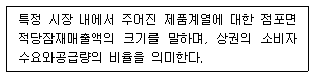
46. 다음 설명에 해당하는 입지대안 평가의 원칙은?
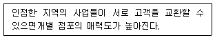
47. 소비자가 상권내의 세 점포 중에서 하나를 골라 어떤 상품을 구매하려고 한다. 점포의 크기와 그 소비자의집에서 점포까지의 거리는 아래의 표와 같다. 수정Huff모형에 따라 세 점포에 대해 이 소비자가 느끼는 매력도의 크기를 올바르게 나타낸 것은?
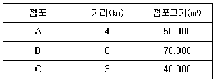
48. 인구 9만명인 도시 A와 인구 1만명인 도시 B 사이의 거리는 20Km이다. Converse의 공식에 의하면 두 도시간의 상권경계(상권분기점)는 도시 A로부터 몇 Km떨어진 곳이 되는가?
49. 상권분석에 관한 주요이론들에 대한 설명으로 옳지 않은 것은?
50. Christaller의 중심지이론에 대한 내용으로 옳지 않은 것은?
51. 상권 매력도를 평가할 때 평가요인이 되는 지역외구매(outshopping)에 대한 내용으로 옳지 않은 것은?
52. 상가를 신설하기 위해 기존의 건물을 인수하기로 했다. 면적이 2,000m2의 대지위에 건물은 A동, B동으로 총2개동이다. A동은 각 층의 면적이 200m2인 지상3층과 지하1층, B동은 각 층의 면적이 300m2인 지상6층과 지하2층으로 구성되어 있다. 이때의 용적률은 얼마인가? (단, 건물외부에 200m2의 지상주차장(건물부속)이 있고 건물내부 주민공동시설 면적의 합이 200m2임)
53. 점포와의 거리에 따라 상권을 구분할 때 각 상권의 개념과 특성을 상대적으로 비교·설명한 내용으로 옳지 않은 것은?
54. 다음은 신규점포를 개설하는 과정에서 Huff모델을 활용해 상권을 분석하는 세부과정을 기술한 것이다. 일반적으로 적용되는 분석과정을 순서대로 올바르게 나열한 것은?
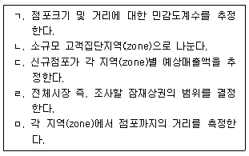
55. 체인점의 도미넌트(dominant)출점전략에 대한 설명으로 옳지 않은 것은?
56. 용도지역 및 용도지구에 대한 설명으로 옳지 않은 것은?
57. 중심성지수에 대한 설명으로 옳지 않은 것은?
58. 상권분석시 관심을 가져야 할 공간적 불안정성(spatialnon-stability)에 관한 설명으로 옳지 않은 것은?
59. 상권과 고객침투율과의 관계 및 이를 통해 얻을 수 있는 개념에 대한 설명으로 옳지 않은 것은?
60. 다점포 소매네트워크의 설계, 신규점포 추가시의영향분석, 기존점포의 재입지 및 폐점 등의 상황을 분석할 때 입지배정모형(location allocation model)이 활용될 수 있다. 이 모형의 5가지 주요 구성요소에 해당하지 않는 것은?
4과목: 유통마케팅
61. 서비스마케팅에 관한 설명으로 가장 옳지 않은 것은?
62. 심리적 가격결정에 대한 설명으로 옳지 않은 것은?
63. 다음에서 설명하고 있는 서비스 방식은 무엇인가?
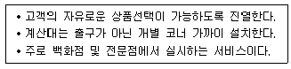
64. 점포내 상품 진열방법에 대한 설명의 짝으로 옳은 것은?
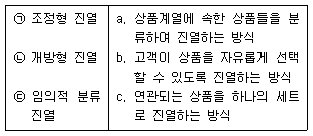
65. 벤더(vendor)에 대한 설명으로 옳지 않은 것은?
66. 소매 점포의 직원을 선발하기 위한 수요예측방법에 대한설명으로 옳지 않은 것은?
67. 다음과 같이 옷 구매를 고민하는 소비자 A를 가장적합하게 설명할 수 있는 모형은?
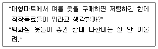
68. 다음 사례의 소매기업이 해외 시장으로 진입하려는 방식의 장점은?
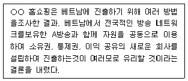
69. 소매업체들의 성장전략에 대한 설명의 짝으로 옳은 것은?
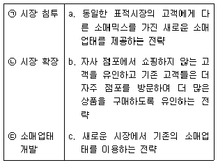
70. 무점포 소매상에 대한 내용으로 옳지 않은 것은?
71. 인터넷 소매업의 유형에 대한 설명으로 가장 옳지 않은 것은?
72. TV홈쇼핑이 원활하게 이루어지기 위해서는 많은참여자가 필요한데 그 중에서도 핵심적인 참여자인 아래의 사업자를 순서대로 올바르게 나열한 것은?
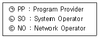
73. 제품믹스의 가격 결정 방법에 대한 설명으로 가장 옳지 않은 것은?
74. 다음 글상자에서 제시된 방안은 서비스 갭 모형에서 어떤 갭을 주로 해소하기 위한 것인가?
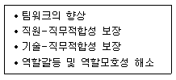
75. 유통업체가 CRM(Customer Relationship Management)을 통해 얻을 수 있는 효과들을 모두 고르면?
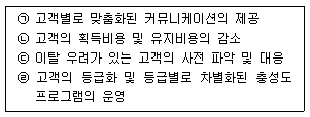
76. 단속형 거래와 관계형 거래를 비교한 내용으로 옳지 않은 것은?
77. 소매업체의 시장세분화에 대한 설명으로 옳지 않은 것은?
78. A 고객이 다속성 태도모형 중 보상적 태도모형에 기초하여 점포태도를 결정할 때, 점포운영자의 대응방안으로 옳지 않은 것은?
79. 저관여제품의 소비자 구매특징 및 유통전략으로 가장 옳지 않은 것은?
80. 소비자의 구매동기를 크게 ‘부정적인 상태를 제거하려는 동기’ 와 ‘긍정적인 상태를 추구하려는 동기’ 로 구분할 경우, ‘부정적인 상태를 제거하려는 동기’에 해당되지 않는 것은?
5과목: 유통정보
81. XML 에 대한 설명으로 가장 옳지 않은 것은?
82. 3D프린팅이 기존 제조업과 공급사슬에 미치는 영향에 대한 설명으로 가장 옳지 않은 것은?
83. 다음은 전자상거래 시스템의 보안에 위협이 되는 악성코드 중 무엇에 관한 설명인가?
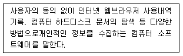
84. 대표적인 인터넷 프로토콜에 대한 설명으로 가장 옳지 않은 것은?
85. 인터넷 조사방법의 일환인 쿠키(cookie)를 활용하는 방법으로 가장 옳지 않은 것은?
86. 저장소로서의 하둡(Hadoop)의 장점으로 가장 옳지 않은 것은?
87. 좋은 데이터와 나쁜 데이터를 가르는 기준에 대한설명과 관련된 질문이다. 다음 사례에서 확보하지 못한 데이터 품질 기준으로 가장 옳은 것은?
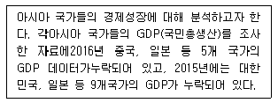
88. 서버를 보유하거나 고객관리시스템을 직접 개발하는 일은 자사의 경쟁력 강화에 도움이 안 되는 ‘비경쟁영역’이라는 생각 때문에 발생하는 클라우드 서비스이용으로 이 부문들을 모두 포함하는 클라우드 서비스로 가장 적합한 것은?
89. 의사결정 과정 단계 중 가상적 상황에 대한 민감도 분석결과를 활용하는 단계로 가장 옳은 것은?
90. ( )에 들어갈 용어로 옳은 것은?
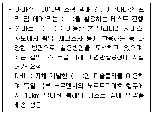
91. 공급사슬관리 성과측정을 위해 활용되는 SCOR 모델의 프로세스에 대한 설명으로 가장 옳지 않은 것은?
92. GS1(Global Standard No.1)에 대한 설명으로 가장 옳지 않은 것은?
93. 다음은 유통정보시스템을 개발할 때 선택하는 방법 중 무엇에 관한 설명인가?
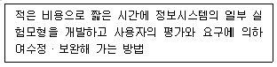
94. 다음은 인터넷을 기반으로 한 유통정보시스템을 구축하는데 있어 회원관리를 위해 논리적 DB설계를 하는 단계에서 회원에 대한 엔티티를 도식화 한 그림이다. 이에 대한 설명으로 옳지 않은 것은?
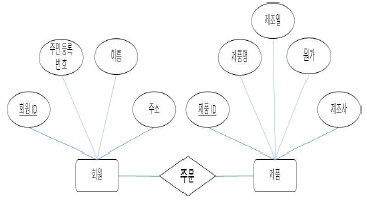
95. 다음 설명은 노나카 이쿠지로가 설명한 조직에 존재하는 지식의 종류 중 한 가지에 관련된 내용이다. 이에 해당하지 않는 것은?
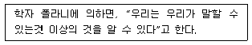
96. 운송형태의 종류에 대한 설명으로 가장 옳지 않은 것은?
97. 노나카는 조직의 지식창출과정을 SECI모형으로 설명하고 있으며 나선형으로 진화되어짐을 보이고 있다. 나선형진화과정 중, 개인과 개인이 대면접촉을 시작하는 과정으로 지식생성이 이루어지는 과정은?
98. 크로스도킹(Cross Docking)의 기대효과로 가장 옳지 않은 것은?
99. ( )안에 들어갈 용어로 옳은 것은?
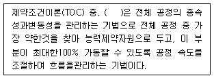
100. e-비즈니스에서 거래 상대별 유형과 그 사례를 짝지은 것으로 가장 옳지 않은 것은?